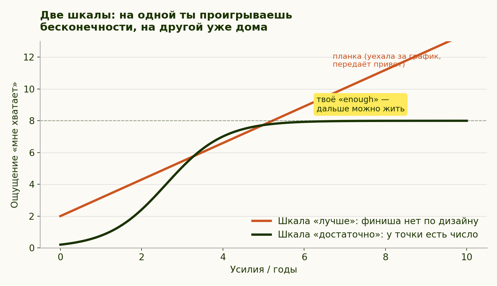

Модуль 3. Достаточность: у «хватит» есть число
Глава 5 из 14 · 9 мин чтения
Идея
Спроси себя, сколько денег — достаточно. Сколько часов спать. Сколько раз в месяц видеться с друзьями. Если на любой из этих вопросов первым приходит «ну, побольше бы», значит, сфера живёт у тебя на шкале без конца. А на шкале без конца ты всегда позади — сколько бы ни было.
В этом вся идея модуля: у «лучше» нет точки, где можно остановиться, а у «достаточно» она есть. И ставишь её ты, а не тот, кто продаёт тебе следующую ступень.
Теперь то же самое аккуратно. В этом модуле «лучше» — открытая шкала: улучшение можно продолжать и после приемлемого результата. Это авторская модель, не безграничная измеряемая величина. «Достаточно» здесь — выбранный человеком порог для конкретной сферы; он может быть числом, диапазоном или описанием, а не объективной величиной. Противопоставление шкал — авторская линза главы: продукты оптимизации часто говорят «лучше», а для жизни можно выбрать «достаточно». Это не утверждение о всей индустрии, а предложение, что делать со своей жизнью.
Ключевая операция модуля — перевод сфер жизни из шкалы «лучше/хуже» в шкалу «хватает/не хватает».
Операция короткая, но применяется дальше по курсу чаще любой другой: своё число для расходов — в модуле 6, для дохода, часов и признания — там же, в разделе о карьере; для тела — на странице «Красота и внешность», где «достаточно» формулируется в терминах самочувствия, а не размера; для сна — на странице «Здоровье»; для секса — в конце соответствующей страницы, где выясняется, что порог там определяется вдвоём и разговором. Сюда же относится место жизни: «лучшая страна» — открытая шкала, на которой всегда найдётся юрисдикция с более низкими налогами, морем потеплее и медициной подешевле, а «достаточно» формулируется списком условий, которые тебе подходят. Так что если эта глава показалась короткой — она просто не разложена здесь целиком. На шкале «достаточно» можно заранее выбрать достижимую точку и затем проверить, достигнута ли она; нельзя предполагать, что читатель уже её прошёл.
Разберём операцию целиком — на одной сфере. Возьмём сон, потому что на нём видно всё и ни с кем не надо договариваться.
Шаг первый: услышать, на какой шкале сфера живёт сейчас. Признак открытой шкалы простой — на вопрос «сколько тебе нужно спать» приходит не число, а направление: «побольше бы», «нормально бы высыпаться», «как получится». Пока ответ звучит так, сфера не проверяема: сколько ни поспи, всегда можно поспать лучше.
Шаг второй: назвать порог. Не идеальный, не рекомендованный, не тот, что в статье, — свой. «Мне хватает семи часов и отбоя до полуночи». Порог может быть и не числом: «хватает, когда я не засыпаю в метро по дороге на работу» — это тоже проверяемая формулировка, у неё есть да и нет.
Шаг третий, ради которого всё делалось: сверить порог с тем, что уже есть. И тут выясняется интересное. Часть сфер оказывается закрытой — ты уже там, просто никто не сообщил. Человек может годами тревожиться о сне, который его порогу соответствует, потому что мерил не с порогом, а с чужой витриной. Такую сферу нужно снять с довольствия: не улучшать, а засчитать.
Шаг четвёртый — для тех сфер, где порог не достигнут. Вот здесь и появляется настоящая работа, и она сузилась до размеров, с которыми можно что-то сделать: не «наладить жизнь», а «лечь на час раньше по будням». В курсе есть и способ это внедрять — не рывком, а одной опорой; он в модуле 4, в разделе про режим.
Три места, где операция обычно застревает.
«Назову число — и остановлюсь навсегда». Самое частое опасение, и оно ложное по построению: порог — не потолок, а точка отсчёта. Он ставится, чтобы стало видно, где ты, а не чтобы запретить двигаться. Дойти до своего «достаточно» и потом захотеть больше — совершенно законно, разница только в том, что теперь это твой выбор, а не бегство от чувства недостачи. Об этом же — модуль 4, где рост становится добровольным ровно после того, как перестаёт быть обязательным.
«Я не знаю своего числа». Нормальная ситуация, потому что его никогда не спрашивали. Работает обратный ход: вспомни последний период, когда в этой сфере всё было нормально, и опиши его. Не лучший период — нормальный. Сколько ты тогда спал, сколько тратил, как часто виделся с людьми? Это и есть черновик порога, и он точнее любого вычитанного.
«Число есть, но, кажется, чужое». Проверка — из модуля 2, из раздела о базовых ценностях: кто расстроится, если я это брошу? Если на месте твоего порога стоит чужое лицо, ты выбрал не порог, а обязательство перед кем-то, кто о нём не знает.
Почему именно число, а не ощущение. Ощущение «мне хватает» сдвигается вместе с настроением, лентой и разговором с более успешным знакомым. Названный заранее порог — нет. В этом весь смысл операции: ты выносишь решение о том, сколько тебе нужно, за пределы того момента, когда тебе будут продавать недостачу. Это ровно то же правило амплитуды из модуля 1, только применённое не к решениям на пике, а к самой планке.
И чего «достаточно» не отменяет. Оно не отменяет амбиции, не запрещает хотеть большего и не требует довольствоваться малым — курс не про аскезу и нигде её не предлагает. Оно отменяет ровно одно: обязанность считать себя недостаточным до тех пор, пока не достигнут порог, который никто не называл вслух и который двигают без твоего участия.

Это авторская схема двух способов самооценки, а не измерение благополучия: открытое сравнение с «лучше» и выбранная точка «достаточно». Подписи модели: «планка может сдвигаться» и «моя выбранная точка „достаточно“». Легенда: «Лучше» — открытая шкала сравнения; «Достаточно» — выбранная точка остановки. Схема показывает две ненумерованные концептуальные линии, без осей и делений.
Быстрая радость и медленное счастье: два разных вещества
У «достаточно» есть ещё одно измерение, и это авторская линза главы, а не физиология: я предлагаю различать два контура радости. Быстрый — короткие яркие вспышки на новизну и предвкушение: лайк, покупка, выигрыш, сахар, мэтч. Он громкий, мгновенный и со встроенной инфляцией: к повторам глохнет и просит дозу больше и чаще, — вся индустрия из части I технически является его дистрибьютором. Медленный — тихий фон удовлетворённости: после работы руками, долгой прогулки, разговора, обеда с теми, кого любишь, сделанного дела. Он не даёт пика — он даёт уровень; его не замечаешь в моменте, но именно из него сделано то, что при взгляде назад называют «я был счастлив».
Отсюда различение, которое стоит целого модуля: счастье — это не эйфория. Эйфория — событие быстрого контура: пик, за которым приходит спад; её химически форсированные версии выставляют счёт, разобранный в «Побегах», в разделе про анестезию. Счастье в этой рамке — величина медленного контура: не всплеск, а фон; не «вау», а «хорошо». Главное его свойство — незаметность: быстрый контур кричит, медленный молчит, поэтому в моменте кажется, что ничего особенного не происходит.
Практический вывод неутешителен для индустрии: медленный контур не продаётся. Его нельзя купить вспышкой — он копится из непродаваемого: сна, движения, связей, дела и времени. Поэтому реклама всегда будет продавать эйфорию, называя её счастьем. Различать их — навык, и словарь для него теперь есть.
Дополнение к практике недели:
- Дневник двух контуров. Три дня вечером записывай по одному событию каждого типа: «вспышка» дня и «тихое хорошо» дня.
- Один обмен. Раз в неделю сознательно обменяй порцию быстрого — полчаса ленты или импульсивную покупку — на прогулку, звонок или готовку.
Почему это ценно
Экономия жизни. У улучшения без точки остановки есть цена, и платится она не деньгами, а вечерами. Улучшение сверх выбранного «достаточно» требует ресурсов; отнимает ли оно время у более дорогого, решается по конкретному выбору, а не автоматически. «Бессрочный налог» — метафора для оптимизации без точки остановки: посчитай её цену во времени и силах в своём случае. Считается она просто: сколько часов за прошлый месяц ушло на то, что и так было в порядке.
Различение сфер. Тревога любит звучать как «у меня всё плохо», хотя за ней обычно стоит одно-два конкретных места. Инвентаризация может показать нехватку в одной сфере, в нескольких или ни в одной; обещать типичный результат «одна-две» нельзя. Точное описание нехватки — начало решения, но не измеримая «половина». Размытое «надо всё улучшать» — это вечная тревога без решения: у него нет ни первого шага, ни признака, по которому станет ясно, что справился.
Иммунитет к сравнению. Когда своего числа нет, чужой результат автоматически становится оценкой твоего: сравнивать-то больше не с чем. Когда число есть, у чужого результата появляется конкурент — твой собственный порог, и вопрос из «он лучше меня?» превращается в «а мне-то хватает?». Собственный порог «достаточно» может ослабить сравнение, но не лишает чужие результаты эмоциональной силы автоматически: чужой успех может задевать и после того, как ты назвал своё число. Разница в том, что теперь есть чем ответить, и ответ не про него.
Практика недели
- Определи «достаточно» в четырёх сферах: сон, деньги, общение, продуктивность. Конкретные пороги делают упражнение проверяемым: можно увидеть, достигнуты они или нет. Порог не обязательно числовой и не является нормой для других. Не «идеально», а «мне хватает». «Внутренний отдел продаж» — метафора безлимитной потребности; проверь, отражает ли она твой выбор, не объявляя любой рост навязанным.
- Аудит. Признание достигнутого порога может дать повод остановиться и заметить нормальное; это не официальное разрешение и не гарантированное чувство.
- Одна настоящая нехватка. Сосредоточиться на одной сфере — предлагаемая здесь стратегия снижения перегрузки; её нельзя назвать полезнее одновременной работы для каждого.